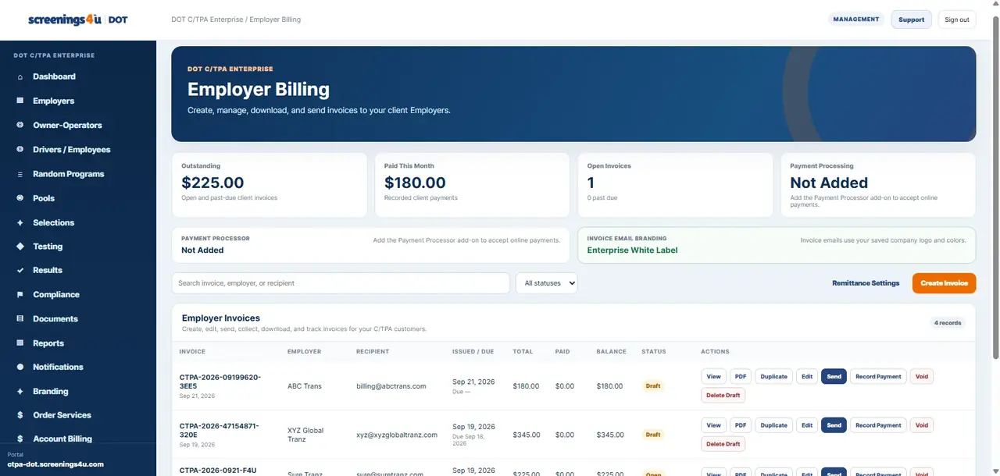
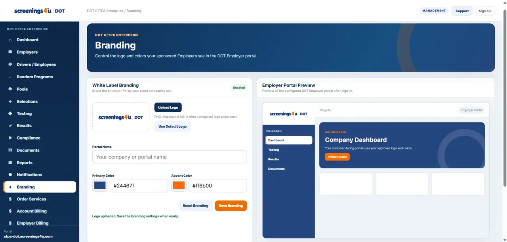

Employer Client Management
Manage employer accounts, contacts, settings and program relationships from one C/TPA workspace.
Workforce DOT helps C/TPAs operate across employer accounts, covered workers, consortium pools, random selections, testing orders, results, compliance records, reporting and client billing without splitting the work across disconnected systems.

The C/TPA workspace connects employer administration, covered workers, consortium pools, testing, compliance, documents, billing and employer-facing delivery.
Manage employer accounts, contacts, settings and program relationships from one C/TPA workspace.
Maintain covered-worker records across employer clients and keep them connected to program activity.
Create and administer consortium pools, memberships and program participation across managed employers.
Execute and manage random selections with a clear record of selection activity and status.
Create and track testing orders and use enabled collection-site workflows on eligible plans.
Review authorized results, compliance cases, deadlines and supporting records across client programs.
Create and manage invoices for employer clients with billing tools included across current C/TPA plans.
Professional and Enterprise plans add deeper employer delivery, while Enterprise adds branded email and white-label controls.

Pool administration lives beside the employer and worker records behind each program, so eligibility and selection activity stay connected to the same account structure.
Current C/TPA subscriptions include billing tools and client invoicing so operational activity and customer billing can stay closer together.


Professional adds employer-portal delivery. Enterprise goes further with branded email, white-label capability, integrations, SSO and audit history.
Standard reporting is available across current plans, while Professional and Enterprise add advanced reporting and access to more detailed operational views.

Current DOT C/TPA subscriptions are published as Essential, Professional and Enterprise.
Core employer management, covered workers, consortium pools, selections, testing orders, compliance, documents, standard reports, notifications, billing tools and client invoicing.
View plan details →Adds collection-site tools, sensitive results, advanced reporting and employer-portal delivery for a deeper multi-client operation.
View plan details →Adds white label, branded email, integrations, SSO, audit history, employer import, policy tools and advanced controls.
View plan details →